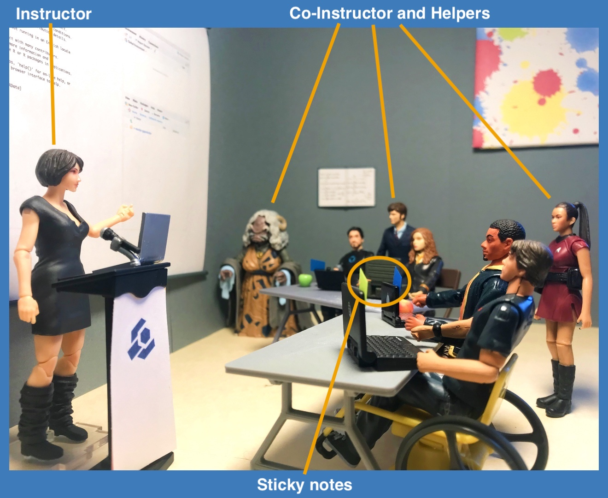
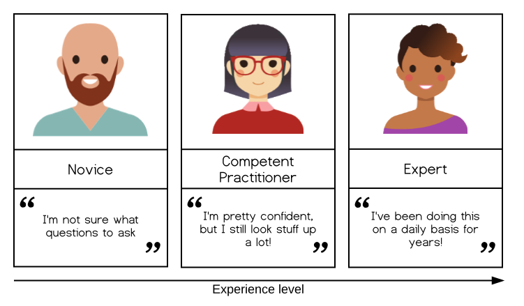
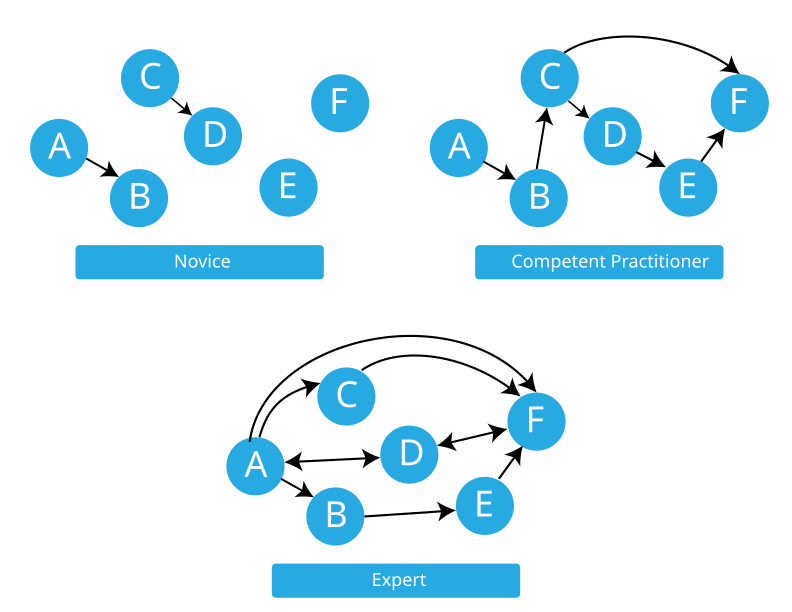

All in One View
Content from Welcome
Last updated on 2026-07-13 | Edit this page
Overview
Questions
- What is The Carpentries and how do we approach teaching?
- What should you expect from this training?
Objectives
- Identify common ground with some of your fellow participants.
- Understand a general structure and core goals of The Carpentries.
- Predict what will and will not be covered in this training.
- Know where to find The Carpentries Code of Conduct and how to report an incident.
TODO: update this section
Pronouns and Names
Using correct names and pronouns (e.g. “she/her”) is important for setting a respectful tone. Learning these is hard to do quickly, so we recommend displaying it prominently during the training.
In an online training, give everyone a moment to update their display name to reflect how they would like to be addressed.
At an in-person event, we recommend supplying name tags and markers, or using plain paper to create table-displayed name placards.
Note that pronouns are personal and some participants might prefer not to share them. Do not force people to share their pronouns. One reason to avoid pressuring people to share them is to allow people to share their gender identity only when they feel ready to. It is, however, necessary for all participants to use pronouns and names as listed when participants provide them.
The resources below can provide additional guidance on respectful pronoun usage:
- The proper use of pronouns in language: https://lgbt.ucsf.edu/pronounsmatter
- The importance of using pronouns: https://www.pronouns.org/
- How to use personal pronouns: https://www.pronouns.org/how
- How to deal with situations when you use the wrong pronoun: https://www.pronouns.org/mistakes
Before The Course Begins
Getting to know each other
If the Trainer has chosen an icebreaker question, participate by writing your answers in the Etherpad.
Code of Conduct
To make clear what is expected, everyone participating in The Carpentries activities is required to abide by our Code of Conduct. Any form of behaviour to exclude, intimidate, or cause discomfort is a violation of the Code of Conduct. In order to foster a positive and professional learning environment we encourage you to:
- Use welcoming and inclusive language
- Be respectful of different viewpoints and experiences
- Gracefully accept constructive criticism
- Focus on what is best for the community
- Show courtesy and respect towards other community members
If you believe someone is violating the Code of Conduct, we ask that you report it to The Carpentries Code of Conduct Committee by completing this form.
Introductions
Hello everyone, and welcome to The Carpentries instructor training. We are very pleased to have you with us.
This Event’s Trainers
To begin class, each Trainer should give a brief introduction of themselves.
(For some guidelines on introducing yourself, see some content from the Introductions section later in the training.)
Now, we would like to get to know all of you.
Reviewing The Carpentries Experience and Goals
For the multiple choice questions below, please place an “X” next to the response(s) that best apply to you. Then find yourself a spot in the Etherpad below to write a short response to the last question.
Have you ever participated in a Software Carpentry, Data Carpentry, or Library Carpentry Workshop?
- Yes, I have taken a workshop.
- Yes, I have been a workshop helper.
- Yes, I organised a workshop.
- No, but I am familiar with what is taught at a workshop.
- No, and I am not familiar with what is taught at a workshop.
Which of these most accurately describes your teaching experience?
- I have been a graduate or undergraduate teaching assistant for a university/college course.
- I have not had any teaching experience in the past.
- I have taught a seminar, workshop, or other short or informal course.
- I have been the primary or responsible teacher for a university/college course.
- I have taught at the primary or secondary education level.
- I have taught informally through outreach programs, hackathons, libraries, laboratory demonstrations, and similar activities.
Why are you taking this course? What goals do you have for this training?
This exercise should take about 5 minutes for responses, with an optional 10 for additional discussion as time permits.
To make sure everyone has the same context, we will give a brief overview of The Carpentries organisation before starting the training.
A Brief Overview of The Carpentries

Software Carpentry, Data Carpentry, and Library Carpentry are official Lesson Programs of The Carpentries. The Carpentries is a global community of volunteer researchers, educators, and others oriented around improving basic computing and data skills for researchers through intensive, short-format workshops.
- Software Carpentry focuses on helping researchers develop foundational computational skills
- Data Carpentry focuses on helping researchers work effectively with their data through its lifecycle
- Library Carpentry focuses on teaching data skills to people working in library- and information-related roles.
The main goal of The Carpentries is not to teach specific skills, per se - although those are covered - but rather, to convey best practices that will enable researchers to be more productive and do better research.
Instructor Training Overview
The goal of this training is to provide you with the skills and information you need to become a certified Carpentries Instructor. Our expectations of certified Instructors is that they:
- be familiar with and understand how to apply research-based teaching principles, especially as they apply to The Carpentries audience.
- understand the importance of a respectful and inclusive classroom environment; commit to creating such an environment; and be able to identify and implement The Carpentries policies and general practices to accomplish this.
- practice and develop skills in the teaching methods used in The Carpentries workshops.
- learn enough about The Carpentries organisation to know where to go for help, how to start organizing a workshop, and how to get involved with community activities.
These four goals are broken down into four main themes of content:
How Learning Works
One of our main emphases will be discussing the best practices of teaching. We will be introducing you to a handful of key educational research findings and demonstrating how they can be used to help people learn better and faster.
Building Teaching Skill
Just like learning a new language, a musical instrument, or a sport, teaching is a skill that requires practice and feedback. We will have many opportunities to practice and give each other feedback throughout this training.
Creating a Positive Learning Environment
One part of making this a productive experience for all of us is a community effort to treat one another with kindness and respect. The Code of Conduct is one piece of this. We will also be discussing and practicing teaching techniques to create a positive and welcoming environment in your classrooms, and will spend some time talking about why this is important.
The Carpentries History and Culture
In addition to the teaching practices and philosophy that have been adopted by The Carpentries community, it is helpful to become familiar with our community structure and organisational procedures as you prepare to join our Instructor community. The greatest asset of The Carpentries is people like you - people who want to help researchers learn new skills and share their own experience and enthusiasm. Meeting your fellow trainees and Instructor Trainers at this event is your first step into The Carpentries community.
What We Leave Out
We will not be going over Data Carpentry, Library Carpentry, or Software Carpentry workshop content in detail (although you will gain familiarity with some of the content through the exercises), This training is a significant requirement for becoming a certified Carpentries Instructor. The additional steps for certification, called Checkout, will require that you dig into the workshop content yourself. We will talk about checkout requirements more in part 3 of this training.
We also do not discuss how to develop lessons, although we do mention some aspects of lesson design. We include this information to help you as an instructor identify the important components of lessons for high impact, inclusive teaching. The Carpentries now has a growing subcommunity dedicated to lesson development, and offers additional training in lesson development.
If there is a particular topic that you would like us to address, let the Trainers know.
What Questions Do You Have?
We hope and expect that you will have many questions during this training! Please do not keep them to yourself. If you find something unclear, chances are good that others will have the same question, too. It is ok to ask even if you think you might have missed an answer already given (e.g. during a distracted moment or a dropped connection)! Depending on the time available, your Trainers may ask you to share your questions verbally, in the Etherpad, or otherwise.
Now that we have a road map of what we are covering we are ready to begin our training. Our goal is that by the end, you will have acquired some new knowledge, confidence, and skills that you can use in your teaching practice in general and in teaching Carpentries workshops specifically.
- The Carpentries is a community of practice. We strive to provide a welcoming environment for all learners and take our Code of Conduct seriously.
- This episode sets the stage for the entire training. The introductions and exercises help everyone begin to develop a relationship and trust.
- This training will cover evidence-based teaching practices and how they apply specifically to The Carpentries.
- Learner motivation and prior knowledge vary widely.
Content from Building Skill With Practice
Last updated on 2026-07-13 | Edit this page
Overview
Questions
- How do people learn?
- Who is a typical learner?
- How can we help novices become competent practitioners?
Objectives
- Compare and contrast the three stages of skill acquisition.
- Identify a mental model and an analogy that can help to explain it.
- Understand the limitations of knowledge in the absence of a functional mental model.
- Appreciate the value in a slow pace of delivery.
We will now get started with a discussion of how learning works. We will begin with some key concepts from educational research and identify how these principles are put into practice in SRSG training workshops.
The SRSG Pedagogical Model
The Southampton Research Software Group aims to teach computational competence to learners. We take an applied approach adopted from the Carpentries, avoiding the theoretical and general in favour of the practical and specific. By showing learners how to solve specific problems with specific tools and providing hands-on practice, we develop learners’ confidence and lay the foundation for future learning.
A critical component of this process is that learners are able to practice what they are learning in real time, get feedback on what they are doing, and then apply those lessons learned to the next step in the learning process. Having learners help each other during the workshops also helps to reinforce concepts taught during the workshops.
An SRSG workshop is an interactive event – for learners and instructors. We give and receive feedback throughout the course of a workshop. We incorporate assessments within the lesson materials and ask for feedback on sticky notes during lunch breaks and at the end of each day.
One reason why practice and feedback are so important is because a Carpentries-style workshop is not simply a source of information: It is the starting point for development of a new skill. To understand what this means, we will start by exploring what research tells us about skill acquisition and development of a “mental model.”
The Acquisition of Skill
Our approach is based on the work of researchers like Patricia Benner, who applied the Dreyfus model of skill acquisition in her studies of how nurses progress from novice to expert (see also books by Benner). This work indicates that through practice and formal instruction, learners acquire skills and advance through distinct stages. In simplified form, three stages of this model are:

-
Novice: someone who does not know what they do not know, i.e., they do not yet know what the key ideas in the domain are or how they relate. Novices may have difficulty formulating questions, or may ask questions that seem irrelevant or off-topic as they rely on prior knowledge, without knowing what is or is not related yet.
Example: A novice learner in a Carpentries-style workshop might never have heard of the bash shell, and therefore may have no understanding of how it relates to their file system or other programs on their computer.
-
Competent practitioner: someone who has enough understanding for everyday purposes. They will not know all the details of how something works and their understanding may not be entirely accurate, but it is sufficient for completing normal tasks with normal effort under normal circumstances.
Example: A competent practitioner in a Carpentries-style workshop might have used the shell before and understand how to move around directories and use individual programs, but they might not understand how they can fit these programs together to build scripts and automate large tasks.
-
Expert: someone who can easily handle situations that are out of the ordinary.
Example: An expert in a Carpentries-style workshop may have experience writing and running shell scripts and, when presented with a problem, immediately sees how these skills can be used to solve the problem.
Note that how a person feels about their skill level is not included in these definitions! You may or may not consider yourself an expert in a particular subject, but may nonetheless function at that level in certain contexts. We will come back to the expertise of the Instructor and its impact – positive and negative – on teaching, in the next episode. For now, we are primarily concerned with novices, as this is The Carpentries’ primary target audience.
It is common to think of a novice as a sort of an “empty vessel” into which knowledge can be “poured.” Unfortunately, this analogy includes inaccuracies that can generate dangerous misconceptions. In our next section, we will briefly explore the nature of “knowledge” through a concept that helps us differentiate between novices and competent practitioners in a more useful and visual way. This, in turn, will have implications for how we teach.
Building a Mental Model
Models are not perfect but are still helpful
All models are wrong, but some are useful.
- George Box, statistician
Understanding is never a mirror of reality, even for an expert; rather, it is an internal representation based on our experience with a subject. This internal representation is often described as a mental model. A mental model allows us to extrapolate, or make predictions beyond and between the narrow limits of experience and memory, filling in gaps to the point that things “make sense.”
As we learn, our mental model evolves to become more complex and, most importantly, more useful. A useful model makes reasonable predictions and fits well within the range of things we are likely to encounter. While there will always be inaccuracies – or “misconceptions” – these do not interfere with day-to-day functioning. A useful model does not seize up or break down entirely as new concepts are added.
The power (and limitations) of analogies
Some mental models can be succinctly summarised by comparison to something else that is more universally understood. Good analogies can be extraordinarily useful when teaching, because they draw upon an existing mental model to fill in another, speeding learning and making a memorable connection. However, all analogies have limitations! If you choose to use an analogy, be sure its usefulness outweighs its potential to generate misconceptions that may interfere with learning.
Analogy Brainstorm
- Think of an analogy to explore. Perhaps you have a favourite that relates to your area of professional interest, or a hobby. If you prefer to work with an example, consider this analogy from education: “teaching is like gardening.”
- Share your analogy with a partner or group. (If you have not yet done so, be sure to take a moment to introduce yourself, first!) What does your analogy convey about the topic? How is it useful? In what ways is it wrong?
This activity should take about 10 minutes.
A mental model may be represented as a collection of concepts and facts, connected by relationships. The mental model of an expert in any given subject will be far larger and more complex than that of a novice, including both more concepts and more detailed and numerous relationships. However, both may be perfectly useful in certain contexts.
Returning to our example levels of skill development:
- A novice has a minimal mental model of surface features of the domain. Inaccuracies based on limited prior knowledge may interfere with adding new information. Predictions are likely to borrow heavily from mental models of other domains which seem superficially similar.
- A competent practitioner has a mental model that is useful for everyday purposes. Most new information they are likely to encounter will fit well with their existing model. Even though many potential elements of their mental model may still be missing or wrong, predictions about their area of work are usually accurate.
- An expert has a densely populated and connected mental model that is especially good for problem solving. They quickly connect concepts that others may not see as being related. They may have difficulty explaining how they are thinking in ways that do not rely on other features unique to their own mental model.

Misconceptions
Mental models are typically formed from limited experience and may work well in familiar situations while failing in new contexts, leading to misconceptions. Effective learning therefore requires more than adding new information; it involves testing, revising, and reorganising existing mental models in response to new evidence. Teaching should support this process by helping learners make their thinking explicit, challenge their assumptions, and develop more accurate and robust understandings.
When mental models break, learning can occur more slowly than you might expect. The longer a prior model was in use, and the more extensively it has to be unlearned, the more it can actively interfere with the incorporation of new knowledge. Our child may quickly adapt to this new information if they had never thought much about mass before and were simply trying out an existing mental model on a new situation. However, if they had extensive experience with balls that were both larger and heavier (for example), it may take longer to unlearn what they thought they understood about mass.
Types of Misconceptions
Correcting learners’ misconceptions is at least as important as presenting them with correct information. There are many ways of classifying different types of misconceptions. For our purposes, it is useful to consider 3 broad categories:
- Simple factual errors. These exist in isolation from any deeper understanding. These are the easiest to correct. Example: believing that Vancouver is the capital of British Columbia.
- Broken models. These occur when inaccuracies explain relationships and generate predictions (often successfully!) in an existing mental model. These take time to address, demanding that learners reason carefully through examples to see contradictions. Examples: believing that motion and acceleration must always be in the same direction, or that seasons are related to the shape of the earth’s orbit.
- Fundamental beliefs, which are deeply connected to a learner’s social identity and are the hardest to change. Examples: “the world is only a few thousand years old” or “human beings cannot affect the planet’s climate”. “I am not a computational person” may, arguably, also fall into this category of misconception.
The middle category of misconceptions is the most useful type to watch out for in Carpentries-style workshops. While teaching, we want to expose learners’ broken models so that we can help them begin to deconstruct them and build better ones in their place.
Anticipating Misconceptions
Describe a misconception you have encountered as a teacher or as a learner.
This exercise should take about 5 minutes.
Using Formative Assessment to Identify Misconceptions
In order to effectively root out pre-existing misconceptions that need to be un-learned and stop quietly developing misconceptions in their tracks, an Instructor needs to be actively and persistently looking for them. But how?
Like so many challenges we will discuss in this training, the answer is feedback. In this case, we want feedback that allows us to assess the developing mental model of a trainee in highly specific ways, to verify that learning is proceeding according to plan and not careening off in some unpredicted direction. We want to get this feedback while we teach so that we can respond to that information and adapt our instruction to get learners back on track.
This kind of assessment has a name: it is called formative assessment because it is applied during learning to form the practice of teaching and the experience of the learner. This is different from exams, for example, which sum up what a participant has learned but are not used to guide further progress and are hence called summative.
Feedback from formative assessment illuminates misconceptions for both Instructors and learners. It also provides reassurance on both sides when learning is proceeding on track! It is far more reliable than reading faces or using feelings of comfort as a metric, which tends to be what Instructors and learners default to otherwise.
Formative Assessments
5 mins.
Any instructional tool that generates feedback that is used in a formative way can be described as “formative assessment.” Based on your previous educational experience (or even this training so far!) what types of formative assessments do you know about?
Write your answers in the shared document; or go around and have each person in the group name one.
The Importance of Going Slowly
It takes work to actively assess mental models throughout a workshop; this also takes time. This can make Instructors feel conflicted about using formative assessment routinely. However, the need to conduct routine assessment is not the only reason why a workshop should proceed more slowly than you think.
One key insight from research on cognitive development is that novices, competent practitioners, and experts each need to be taught differently. In particular, presenting novices with a pile of facts early on is counter-productive, because they do not yet have a model or framework to fit those facts into. In fact, presenting too many facts too soon can actually reinforce an incorrect mental model. (This is a key problem with the “empty vessel” analogy described earlier.)
Most learners coming to Carpentries-style lessons are novices, and do not have a strong mental model of the concepts we are teaching. Thus, our primary goal is not to teach the syntax of a particular programming language, but to help them construct a working mental model so that they have something to attach facts to. In other words, our goal is to teach people how to think about programming and data management in a way that will allow them to learn more easily on their own or understand what they might find online.
If someone feels it is too slow, they will be a bit bored. If they feel it is too fast, they will never come back to programming. — Kunal Marwaha, SWC Instructor
If our goal is to help novices construct an accurate and useful mental model of a new intellectual domain, this will impact our teaching. For example, we principally want to help learners form the right categories and make connections among concepts. We do not want to overload them with a slew of unrelated facts, as this will be confusing.
An important practical implication of this latter point is the pace
at which we teach.
In the first main episode of Software Carpentry’s lesson on the Unix
shell, which covers “Navigating Files and Directories”, there are
only four “commands” for 40 minutes of teaching. Ten minutes per command
may seem glacially slow, but that episodes’s real purpose is to teach
learners about paths; later on, they will learn about history,
wildcards, pipes and filters, command-line arguments, redirection, and
all the other big ideas on which the shell depends, and without which
people cannot understand how to use commands.
That mental model of the shell also includes things like:
- Anything you repeat manually, you will eventually get wrong (so let
the computer repeat things for you by using tab completion and the
historycommand). - Lots of little tools, combined as needed, are more productive than a handful of programs. (This motivates the pipe-and-filter model.)
These two examples illustrate something else as well. Learning consists of more than “just” adding information to mental models; creating linkages between concepts and facts is at least as important. Telling people that they should not repeat things, and that they should try to think (by analogy) in terms of little pieces loosely joined, both set the stage for discussing functions. Explicitly referring back to pipes and filters in the shell when introducing functions helps solidify both ideas.
Meeting Learners Where They Are
One of the strengths of Carpentries-style workshops is that we meet learners where they are. Instructors strive to help learners progress from whatever starting point they happen to be at, without making anyone feel inferior about their current practices or skillsets. We do this in part by teaching relevant and useful skills, building an inclusive learning environment, and continually getting (and paying attention to!) feedback from learners. We will be talking in more depth about each of these strategies as we go forward in our workshop.
- Our goal when teaching novices is to help them construct useful mental models.
- Exploring our own mental models can help us prepare to convey them.
- Constructing a useful mental model requires practice and corrective feedback.
- Formative assessments provide practice for learners and feedback to learners and instructors.
Content from Part 1 Break
Last updated on 2024-03-11 | Edit this page
Take a break. If you can, move around and look at something away from your screen to give your eyes a rest.
Content from Learning as a Process
Last updated on 2026-07-13 | Edit this page
Overview
Questions
- Does subject expertise make someone a great teacher?
- How are we (as Instructors) different from our learners and how does this impact our teaching?
- What is cognitive load and how does it affect learning?
- How can we design instruction to work with, rather than against, memory constraints?
Objectives
- Explain what differentiates an expert from a competent practitioner.
- Describe at least two examples of how expertise can help and hinder effective teaching.
- Identify strategies for becoming aware of your expert awareness gap.
- Demonstrate strategies for avoiding dismissive language.
- Remember the quantitative limit of human memory.
- Distinguish desirable from undesirable cognitive load.
- Evaluate cognitive load associated with a learning task.
Examining Your Expertise
In the last episode, we discussed the transition from novice to competent practitioner through formation of a functional mental model. We now shift our attention to experts. The expert we want to talk about is you!
Even if you do not yet think of yourself as an expert, you may nonetheless have advanced to the point where some of these key characteristics – and potential pitfalls – apply to you. We will discuss what distinguishes expertise from novices/competent practitioners, how being an expert can make it more difficult to teach novices, and some tools to help instructors identify and overcome these difficulties.
What Makes an Expert?
An earlier topic described a key difference between novices and competent practitioners. Novices lack a mental model, or have only a very incomplete model with limited utility. Competent practitioners have mental models that work well enough for most situations. How are experts different from both of these groups?
What Is An Expert?
What is something that you are an expert in? How does your experience when you are acting as an expert differ from when you are not an expert?
This discussion should take about 5 minutes.
In reviewing the answers to the question above you will find that the expert experience amounts to much more than just knowing more facts. Competent practitioners can memorise a lot of information without any noticeable improvement to their performance. So, what makes an expert? The answer is that experts have more connections among pieces of knowledge that help them think and problem-solve quickly; more “short-cuts”, if you will.
This brings us back to our mental model diagrams, where facts are nodes and relationships are arcs. The greater connectivity of a mental model allows experts to:
- see connections between two topics or ideas that no one else can see
- see a single problem in several different ways
- know how to solve a problem, or “what questions to ask”
- jump directly from a problem to its solution because there is a direct link between the two in their mind. Where a competent practitioner would have to reason “A therefore B therefore C therefore F”, the expert can go from A to F in a single step (“A therefore F”).
We will expand on some of these below and how they can manifest in the way you teach.
Mind the Gap
Because your learners’ mental models will likely be less densely connected than your own, a conclusion that seems obvious to you will not seem that way to your learners. It is important to explain what you are doing step-by-step, and how each step leads to the next one.
The problem with this is that when you are used to going from A to F in a single leap, it can be very hard to remember that novices need to go through steps B and C before they can understand the connection between A and F. Experts are frequently so familiar with their subject that they can no longer imagine what it is like to not understand the world that way. This phenomenon is known in the literature as an expert blind spot, although we avoid this term since it can be exclusionary to refer to a disability for other purposes, and we strive to create an inclusive environment for workshop instructors as well as learners.
¡Awareness gaps can lead to some interesting reversals in the classroom. While deep expertise in a subject area can be valuable when teaching, it can also create obstacles that must be overcome with practice. People with less expertise, who still remember what it is like to have to learn the things, can be better equipped to anticipate novice misconceptions compared with an expert who has not learned to identify their awareness gaps.
What does this mean for you? If you have deep expertise in the subject you are hoping to teach, listen carefully to your learners, and seek out less-expert colleagues to discuss your teaching plans. If, on the other hand, you still feel new to your subject area – perhaps you even feel a little tentative about whether you are “expert enough” to teach – take heart! Your explanations may be more likely to meet novice learners where they are.
Awareness Gaps
5 mins.
Choose one of the following two prompts to write about in the shared document:
- Is there anything you are learning how to do right now? Can you identify something that you still need to think about, but your teacher can do without thinking about it?
- Think about the area of expertise you identified for yourself earlier. What could a potential awareness gap be?
“Just” and Other Dismissive Language
Instructors want to motivate learners! We will talk more about motivation in a later episode. But here, we will take a moment to recognise one ineffective strategy often deployed by experts who want learners to believe that a task is as easy as they think it is. This often manifests in using the word “just” in explanations, as in, “Look, it is easy, you just… (wave magic wand with undecipherable incantations)” This language gives learners the very clear signal that the person helping them thinks their problem is trivial and that there must be something wrong with them if they do not experience it that way.
With practice, we can change the way we speak to avoid dismissive language and replace it with more positive and motivating word choices.
Changing Your Language
5 mins.
- What other words or phrases, besides “just”, can have the same effect of dismissing the experience of finding a subject difficult or unclear?
- Propose an alternate phrasing for one of the suggestions above.
Write your examples and alternatives in the shared document.
It is hard to break the habit of trying to convince learners that a task is “easy”! A few alternatives might include statements like:
- “This task will become really easy once you have learned how to do it.”
- “We only need to learn two new commands to accomplish the next task.”
- “This task may feel like it will take you all year to learn, but in my experience it will take you a lot less time than that to master it.”
“Any Questions?”
Another well-intended move that can go wrong in the presence of awareness gaps is the call for questions. An Instructor may accidentally dismiss learner confusion by asking for questions in a way that reveals that they do not actually expect that anyone will have them. Asking, “Does anyone have any questions?” implies that most people will not; the shorter the wait time before moving on, the more this implication is magnified. Instead, consider asking “What questions do you have?” and leaving a healthy pause for consideration. This firmly establishes an expectation that people will, indeed, have questions, and should challenge themselves to formulate them.
You Are Not Your Learners
As you seek to re-acquaint yourself with the novice experience, it can be tempting to think back to your own experiences getting started in programming. Trips down memory lane can be productive! However, it is important that you take care not to generalise from your experience to that of your novice learners.
We will talk more about knowing your audience in a later episode. For now, here are two points to keep in mind when contemplating the learner experience:
- In most cases a researcher’s primary goal is not to learn programming, but to do better and more efficient research. They may not wish to take the time to learn how fundamental syntax or data structures work, or to learn any ‘fun facts’ that are not strictly necessary; they just want to know how to get their work done. This does not mean they never will be interested – maybe this is how you got your start, too! But if you began with an interest in programming, keep in mind that this can make their learning experience very different from yours.
- Some researchers have avoided learning programming previously because they believe that the time investment will be excessive and will interfere with their other work. These kinds of beliefs can make their motivation to persevere more fragile than yours might have been when you got started.
A Carpentry-style Workshop Is Not Computer Science
Many of the foundational concepts of computer science, such as computability, are difficult to learn and not immediately useful. This does not mean that they are not important, or are not worth learning, but if our aim is to convince people that they can learn this stuff, and that doing so will help them do more research faster, computer science concepts are less compelling than things like automating repetitive tasks.
Expert Advantages
As we have seen, the high connectivity of an expert’s mental model poses challenges while teaching novices. However, that is not to say that experts cannot be great teachers! Because of their well-connected knowledge, self-aware experts are well-poised to help students make meaningful connections, to confidently turn an error into a learning opportunity, or to explain a complex topic in multiple ways. Experts can be highly effective as long as they learn to identify and correct for their own expert awareness gaps. Whether or not you identify as an expert, we hope this episode has started you on the path toward developing that skill.
The Importance of Practice (Again)
How can you make sure that expert awareness gaps are not negatively affecting your workshop? Keep in touch with your learners through frequent formative assessment! If you stumble into an expert awareness gap, create confusion by using interchangeable terms, or accidentally discourage rather than invite questions, formative assessment has the power to bring these problems to the surface. As you develop teaching skill, you may be able to avoid these pitfalls. Until then, becoming aware of when they occur will help you to keep their impact under control.
Memory and Attention
The Limits of Memory
Learning involves memory. For our purposes, human memory can be divided into two different layers. The first is called long-term. It is where we store persistent information like our friends’ names and our home address. It is essentially unbounded (barring injury or disease, we will die before it fills up) but it is slow to access.
Our second layer of memory is called short-term. This is the type of memory you use to actively think about things and is often called working memory. It is much faster, but also much smaller: in 1956, George Miller estimated that the average adult’s short-term memory could hold 7±2 items for a few seconds before things started to drop out. This is why phone numbers are typically 7 or 8 digits long: back when phones had dials instead of keypads, that was the longest sequence of numbers most adults could remember accurately for as long as it took the dial to go around and around.
More recent research suggests that short-term memory is actually even smaller than this. Regardless of its exact size, which may differ across people and contexts, we know that short-term memory is limited. This has important implications for teaching. If we present our learners with large amounts of information, without giving them the opportunity to practice using it (and thereby transfer it into long-term memory), they will not retain the material as well as if we present small amounts of information interspersed with practice opportunities. This is yet another reason why going slowly and using frequent formative assessment is important.
Test Your Working Memory
5 mins.
Try a short test of working memory at https://miku.github.io/activememory/.
What was your score? If you are comfortable, share your answer in the Etherpad.
If you are unable to use this activity, ask your Trainer to implement the analog version of this test.
Test Your Working Memory - Analog version
5 mins.
Read the following list and try to memorise the items in it:
cat, apple, ball, tree, square, head, house, door, box, car, king, hammer, milk, fish, book, tape, arrow, flower, key, shoe
Without looking at the list again, write down as many words from the list as you can. How many did you remember? Write your answer in the Etherpad.
Most people will have found they only remember 5-7 words. Those who remember less may be experiencing distraction, fatigue, or (as we will learn shortly) “cognitive overload.” Those who remember more are almost invariably deploying a memory management strategy.
Strategies For Memory Management
Because short-term memory is limited, we can support learners by not flooding their short term memory with too many separate pieces of information. Does this mean we should teach fewer concepts? Yes! However, this is not the only tool in our toolbox. We can also assist by providing strategies and exercises to help them form the connections that will a) support them in holding more things in short-term memory at once and b) begin to consolidate some concepts, moving them into long-term memory.
- Chunking: Learners remember more by grouping related ideas into meaningful “chunks” rather than as isolated units. Grouping together logically connected learning units helps them build a mental model more efficiently.
- Frequent formative assessment: Regular, low-stakes activities that require learners to retrieve and apply knowledge strengthen memory and support transfer to long-term memory. Assessments should occur soon after teaching while information is still accessible, i.e. teach something using live coding, then get them to do a short exercise to test their understanding.
- Group work: Explaining ideas to others (elaboration) reinforces understanding and memory. Collaborative activities also provide opportunities for discussion, peer learning, and instructor support. Pedagogical studies confirm that some of the most useful learning happens between peers, as they explore their understanding (and misunderstandings) with others at a similar level.
- Reflection: Asking learners to summarise, review, or provide feedback encourages retrieval and helps consolidate learning into long-term memory.
- Limit new concepts: Avoid introducing too many ideas at once. Focusing on a smaller number of well-connected concepts reduces cognitive overload, and tools such as concept maps can help keep lessons appropriately scoped.
Attention is a Limited Resource: Cognitive Load
Memory is not the only cognitive resource that is limited. Attention is constrained as well, which can limit the information that enters short term memory in the first place as well as interfere with attempts at consolidation.
While many people believe that they can “multi-task,” the reality is that attention can only focus on one thing at a time. Adding items that demand attention adds more things to alternate between attending to, which can reduce efficiency and performance on all of them.
The Theory of Cognitive Load
There are different theories of cognitive load. In one of these, Sweller posits that people have to attend to three types of things when they are learning:
- Things they have to think about in order to perform a task (“intrinsic”).
- Mental effort required to connect the task to new and old information (“germane”).
- Distractions and other mental effort not directly related to performing or learning from the task (“extraneous”).
Cognitive load is not always a bad thing! There is plenty of evidence that some difficulty is desirable and can increase learning. However, there are limits. Managing all forms of cognitive load, with particular attention to extraneous load, can help prevent cognitive overload from impeding learning altogether.
One way to manage cognitive load as tasks become more complex is by using guided practice: creating a structure that narrowly guides focus on specific skills and knowledge in a stepped fashion, with feedback at each step before transferring attention to a new feature.
Is Guided Practice “Hand Holding?”
An alternative to guided practice is a minimal guidance approach, where learners are given raw materials (for example a text or reference) and asked to explore and learn to solve problems on their own. Minimal guidance is commonly found in many instructional strategies you may have encountered, variously known as constructivist, discovery, problem-based, experiential or inquiry-based learning.
These strategies are not without merit! Indeed, they can work exceptionally well with advanced learners. However, they frequently fall flat, especially with novice audiences. A landmark paper by Kirshner et al. responds to the popularity and uneven success of minimal guidance, applying cognitive load theory to understand why these strategies often fail.
Some people feel concerned that guided practice amounts to “hand-holding,” implying that learners who receive support may never learn to function independently. This view fails to account for the additional cognitive load experienced by novices creating new connections while learning a task. Minimally-guided instruction requires learners to simultaneously master a domain’s factual content AND its search and problem-solving strategies. Fostering creativity and independence takes time. Minimal guidance is intuitively appealing, but that does not mean it always works.
What to Display
If you have attended SRSG or Carpentries training events before, you may have noticed that you have not seen much, or perhaps any of the Instructor Training curriculum during your time as a learner in this training. In most situations we do not recommend displaying training curriculum materials to your learners while you teach.
The visual environment in a workshop should be focused on exactly what you are teaching and should mirror, as closely as possible, exactly what you say. This is because keeping track of distracting and contradictory sensory information adds to cognitive load. The split-attention effect describes the cognitive effort involved with trying to assemble information from different modalities. Learning is most effective when visual displays, text, and auditory information presented together are the same, with minimal distractions.
This is why we ask Instructors to speak commands as they type them on the screen while engaging learners in participatory live coding.
- Experts face challenges when teaching novices due to expert awareness gaps.
- Things that seem easy to us are often not experienced that way by our learners.
- With practice, we can develop skills to overcome our expert awareness gaps.
- Most adults can store only a few items in short-term memory for a few seconds before they lose them again.
- Things seen together are remembered (or mis-remembered) in chunks.
- Cognitive load should be managed through guided practice to facilitate learning and prevent overload.
- Formative assessments can help to consolidate learning in long-term memory.
Content from Motivation and Demotivation
Last updated on 2026-07-13 | Edit this page
Overview
Questions
- Why is motivation important?
- How can we create a motivating environment for learners?
- Why are equity, inclusion, and accessibility important?
- What can I do to enhance equity, inclusion, and accessibility in my workshop?
Objectives
- Identify authentic tasks and explain why teaching them is important.
- Develop strategies to avoid demotivating learners.
- Distinguish praise based feedback on the type of mindset it promotes.
- Recognise systemic factors that can distract and demotivate learners.
- Understand the role of The Carpentries Code of Conduct in maintaining an explicitly inclusive environment.
Motivation Matters
Teaching and learning are not the same process. As we have seen, an instructor can make choices that facilitate the cognitive processes necessary for learning to occur. But any technique can fall flat when learners are not motivated. Worse, demotivation is contagious! Teaching or sharing a classroom with demotivated learners is not fun or rewarding. It can be tempting, especially for teachers facing burnout after strenuous and ineffectual effort, to blame learners for spoiling the classroom experience.
It is true that learner motivation is influenced by many factors well beyond the control of an instructor, including individual background and systemic forces. However, there are many things you can do to cultivate motivation in your classroom, and perhaps most importantly, to avoid doing harm to the precious drive your learners bring to the classroom on day one. In Carpentries-style workshops, most learners come eager to learn! You have the power to influence how they feel when they depart.
No two-day workshop can truly bring a total novice to the level of a competent practitioner. Carpentries-style workshops function in a context of self training, in which workshops offer vital tools and a map for learners to proceed on their own. Our workshops lower the barrier to entry and help learners to get off on the right foot. In this context, cultivating motivation to continue learning, and to carefully pursue best-practices in doing so, is arguably the most important outcome we can achieve.
This section discusses several ways that learners can be motivated (or demotivated!) by instructional content and approaches, and provides practice opportunities for you to become confident in motivating your learners.
How Can Content Influence Motivation?
People learn best when they care about a topic and believe they can master it with a reasonable investment of time and effort. Many scientists might appreciate the value of programming but believe that developing useful skills will take more time than they have available. This presents a problem because believing that something will be too hard to learn often becomes a self-fulfilling prophecy.
One way to combat this problem is to begin a lesson with something that is quick to learn and immediately useful. It is particularly important that learners see it as useful in their daily work. This not only motivates them, it also helps build their confidence in us, so that if it takes longer to get to something they find useful in a later topic, they will persist with the lesson.
Imagine a graph whose axes are labelled “mean time to master” and “usefulness once mastered”. Tasks that are quick to master and immediately useful should ideally be taught first; things in the opposite corner that are time-consuming to learn and have little near-term application should be avoided in our workshops.
%%{init: {"quadrantChart": {"xAxisPosition": "bottom"}, "themeVariables": {} }}%%
%%accDescr {A quandrant chart, 2x2 grid, with y-axis labeled quick to master --> slow to master and and x-axis labeled used rarely --> used frequently. The upper left quadrant says "teach this first" and the lower right quadrant says "do not bother"}
quadrantChart
title When to teach
x-axis quick to master --> slow to master
y-axis used rarely --> used frequently
quadrant-2 Teach this first
quadrant-4 Do not bother
Another way to think about the graph shown above is authentic tasks – real tasks performed by someone doing their work. If you can identify authentic tasks from your own work that could be useful to others, these examples will be highly motivating.
This 2x2 grid can be useful for longer term lesson planning and development as well as for considering how to answer questions. To make the ideas more concrete, here is an example in the context of driving:
%%{init: {"quadrantChart": {"xAxisPosition": "bottom"}, "themeVariables": {} }}%%
quadrantChart
title When to teach
x-axis quick to master --> slow to master
y-axis used rarely --> used frequently
quadrant-2 Teach this first
quadrant-4 Do not bother
quadrant-1 Teach later
quadrant-3 Offer if needed
A - empty carpark : [0.2, 0.8]
B - at speed on a race track : [0.85, 0.25]
C - suburban roads: [0.8, 0.8]
D - with snow chains.: [0.2, 0.15]
%%accDescr {A quandrant chart, 2x2 grid, with y-axis labeled quick to master --> slow to master and and x-axis labeled used rarely --> used frequently. The upper left quadrant says "teach this first" and the lower right quadrant says "do not bother"}An empty carpark (A) is a great place to start for any new driver, but most people will never drive at speed in a race track(B). In contrast, suburbans road (C) are a realistic motivating example that any driver will encounter. That will be on the agenda for a driving school. Driving with snow chains (D) is important if you live in a place that gets extreme snow events, but not for most people. That is something that someone can learn later if they need it, or an individual who lives or frequently visits a place where they are common may even know to ask about, but most people will not need. We would not want a lesson to go from an empty carpark to snow chains because we would probably lose a lot of people.
Actual Time
Any useful estimate of time must take into account how frequent failures are and how much time is lost to them. For example, editing a text file seems like a quick task, but most graphical editors save things to the user’s desktop or home directory. If a novice needs to run shell commands on the files they’ve edited, they often fail to navigate to the right directory without help. You will learn to anticipate these sorts of challenges as you chart your expert awareness gaps. As a result, your skill at estimating time to mastery will improve. If you are new to teaching, try to ask an experienced instructor for feedback before trying out a new exercise.
While we aim to begin workshops with motivating content, in practice this does not always occur. Workflow-based content like that taught in Data Carpentry workshops may start at the beginning of the workflow, for example. Even when a ‘motivating example’ is built in to the start of a workshop, technical problems like software installation can turn those precious first minutes into an experience of frustration and impatience. That is ok! What is important is to be mindful of times when your content is not motivating, and to strategise ways to re-engage learners (and yourself) using some of the other techniques in this section.
How Can You Affect Motivation?
In addition to teaching things that will make our learners’ lives easier and focusing on authentic tasks, there are a number of other strategies we can use to motivate learners when we teach.
Brainstorming Motivational Impacts
Think back to courses you have taken in the past and consider things that an instructor has said or done that you found either motivating or demotivating. Try to think of one example in each case, and share your example under the appropriate heading in the Etherpad.
This exercise should take about 5 minutes.
Invite Participation
Motivation is supported by active engagement. Participation allows learners to ask questions, resolving roadblocks quickly, and demonstrate knowledge, building confidence. It also facilitates learning! However, in a room full of strangers, most learners will not immediately feel comfortable speaking up, especially when they feel confusion or doubt. Creating a motivating classroom means inviting communication and reinforcing that invitation with an attentive response.
A few ways to invite participation are:
- Establishing norms for interaction. This can be done by creating procedures for communication, e.g. turn taking in discussions, passing around a talking stick, or encouraging quieter people to contribute. Having, discussing, and enforcing a Code of Conduct also provides a framework for positive communication to occur.
- Encouraging learners to learn from each other. Working in pairs, or pair programming, encourages learners to talk through their learning process, reinforcing memory and making it more likely that confusion will be expressed and resolved. This can also address challenges of varying background experience: asking more advanced learners to help beginners can maximise learning for both. In these cases, make sure the beginner is doing the typing!
- Acknowledging when learners are confused. Acknowledging and exploring confusion with kindness rewards learners for sharing vulnerable information. It also helps you examine your expert awareness gaps! Formative assessments can pinpoint misunderstandings. When learners see that others are confused, they are more likely to share their own uncertainties.
Encourage a Growth Mindset
People vary in their beliefs about the nature of intelligence and skill development. In academic environments, people are often praised as “talented” or having “high ability”, and may develop an identity around being a certain “type of person” who has inherent strengths or weaknesses.
The belief that ability or intelligence is born rather than made – dubbed a fixed mindset by Carol Dweck – may impact the learning process. Broadly, this is a continuing topic of research and debate in education communities. In the specific context of Carpentries workshops, we frequently encounter learners who believe that they are not “computational people,” and Instructors often report that this fixed mindset interferes with motivation to engage fully with the task of learning to program. We therefore recommend four types of interventions that have been shown to influence mindset, encouraging learners to believe that ability can be acquired through effort – a growth mindset.
- Positive error framing. Errors are inevitable when learning a new skill. However, learners will often interpret errors as indicators of inability – adopting a fixed mindset. Encouraging learners to understand errors in a positive way – as an opportunity to learn something they would have missed otherwise – reinforces a growth mindset and helps them to stay motivated. Be sure to discuss this with your helpers, since they are often the ‘first responders’ to learner mistakes.
Helping Learners Learn From Mistakes
A learner at your workshop asks for your help with an exercise and
shows you their attempt at solving it. You see they’ve made an error
that shows they misunderstand something fundamental about the lesson
(for example, in the shell lesson, they forgot to put a space between
ls and the name of the directory they are looking at). What
would you say to the learner?
In the Etherpad, describe the error your learner has made and how you would respond.
This exercise should take about 5 minutes.
- Presenting the instructor as a learner. We want our learners to have confidence in our qualifications, but it is easy to take this too far. Presenting yourself as a learner offers a relatable model, fostering a growth mindset and teaching a positive approach to the continuing challenge of learning. Using participatory live coding, our chosen method for teaching concepts, is very useful for this reason. It is common to make errors while coding. Embrace these with enthusiasm! Leveraging your own mistakes as opportunities can turn an awkward moment into a highlight of a lesson, demonstrating both problem-solving approaches and positive error framing. If you are unlucky and fail to make any useful mistakes, sharing stories about your learning process can help here, too.
Typos
The typos are the pedagogy. — Emily Jane McTavish
- Praising effort or improvement, not performance or ability. Praise based on the quality of performance often feels like the highest praise because it goes straight to your identity as a person of intellect and skill. When faced with a fixed mindset (“I’m not a computational person!”), many well-intentioned teachers counter with another fixed mindset (“You ARE a computational person! You’re really good at this!”). However, this doesn’t prepare learners to interpret future obstacles as irrelevant to innate ability. Evidence suggests that learner perseverance is best supported in the long term by praising effort or improvement instead. If you are not convinced of this, consider the impact on the person sitting next to your target, who might overhear but not receive the same praise.
Choosing our Praises
Since we are so used to being praised for our performance, it can be challenging to change the way we praise our learners. Which of these examples of praise do you think are based on performance, effort, or improvement?
- That’s exactly how you do it – you haven’t gotten it right yet, but you’ve tried two different strategies to solve that problem. Keep it up!
- You’re getting to be really good at that. See how it pays to keep at it?
- Wow, you did that perfectly without any help. Have you thought about taking more computing classes?
- That was a hard problem. You didn’t get the right answer, but look at what you learned trying to solve it!
- Look at that - you’re a natural!
This exercise should take about 5 minutes.
- Effort-based.
- Improvement-based.
- Performance-based.
- Improvement-based.
- Performance-based.
- Leveraging the power of “yet”. A request for help might start with “I can’t ___” or “I don’t understand ___”. Depending on the attitude of the learner, these can sound like statements of fact rather than requests for help! Adding the word “yet” to the end of these sentences helps emphasise that being a novice is a temporary state, and encourages a growth mindset towards progress.
First, Do No Harm!
When learning a skill, we develop more than expert awareness gaps – we also develop opinions about tools and methods, and sometimes base a professional identity around displaying technical expertise. Technical boasts, insults, and other showy moves can score points in conversation with fellow experts, but these present serious hazards in the classroom! Here are a few things you should not do in your workshop:
- Talk contemptuously or with scorn about any tool or practice, or the people who use them. Regardless of its shortcomings, many of your learners may be using that tool, and may have invested many years in learning to do so. Convincing someone to change their practices is much harder when they think you disdain them.
- Dive into complex or detailed technical discussion with the one or two people in the audience who clearly don’t actually need to be there. Reserve those conversations for breaks or follow-up emails.
- Pretend to know more than you do. People will actually trust you more if you are frank about the limitations of your knowledge, and will be more likely to ask questions and seek help. (Also see “Presenting the instructor as a learner,” above)
- Use the word “just” or other demotivating words we talked about in a previous episode. These signal to the learner that the instructor thinks their problem is trivial and by extension that they therefore must be deficient if they are not able to figure it out.
- Take over the learner’s keyboard. It is rarely a good idea to type anything for your learners. Doing so can be demotivating for the learner (as it implies you don’t think they can do it themselves or that you don’t want to wait for them). It also wastes a valuable opportunity for your learner to develop muscle memory and other skills that are essential for independent work.
- Express surprise at unawareness. Saying things like “I can’t believe you don’t know X” or “You’ve never heard of Y?” signals to the learner that they do not have some required pre-knowledge of the material you are teaching, that they don’t belong at the workshop, and it may prevent them from asking questions in the future. For more on this see the Recurse Center’s Social Rules.
It can be difficult to avoid these demotivators entirely. Some people are so used to complaining about certain tools that they initially fail to realise they’re doing it while teaching. If you catch yourself doing this, you might find a way to walk it back, or consider how you might repair or improve your motivational efforts on your next interaction. Teaching yourself – and your helpers! – to avoid these types of comments takes practice, but is well worth the effort.
Not Just Learners
What we have not discussed yet is strategies to motivate the instructor. But why does your motivation matter?
- Learners respond to an instructor’s enthusiasm. The more motivated you are, the more motivated they will be!
- Instructors are learning to teach. This takes motivation, too! Deliberative practice, seeking feedback, and reflecting on mistakes in the context of your own busy work life is a challenge. What will keep you energized to stay engaged with your learning process?
- Carpentries Instructors teach because they want to. Whether you are truly volunteering your time or are fulfilling a role in a job you have chosen, teaching is something you came here motivated to do. Teaching can be an incredibly gratifying activity! Finding and preserving your own motivation through the many challenges ahead will make your journey as a teacher a more joyful one.
Why Do You Teach?
We all have a different motivation for teaching, and that is a really good thing! The Carpentries wants instructors with diverse backgrounds because you each bring something unique to our community.
What motivates you to teach? Write a short explanation of what motivates you to teach. Save this as part of your teaching philosophy for future reference.
This exercise should take about 5 minutes.
- A positive learning environment helps people concentrate on learning.
- People learn best when they see the utility in what they’re learning and believe it can be accomplished with reasonable effort.
- Encouraging participation and embracing errors helps learners to stay motivated.
Content from End Part 1
Last updated on 2026-07-13 | Edit this page
Take a break. If you can, move around and look at something away from your screen to give your eyes a rest.